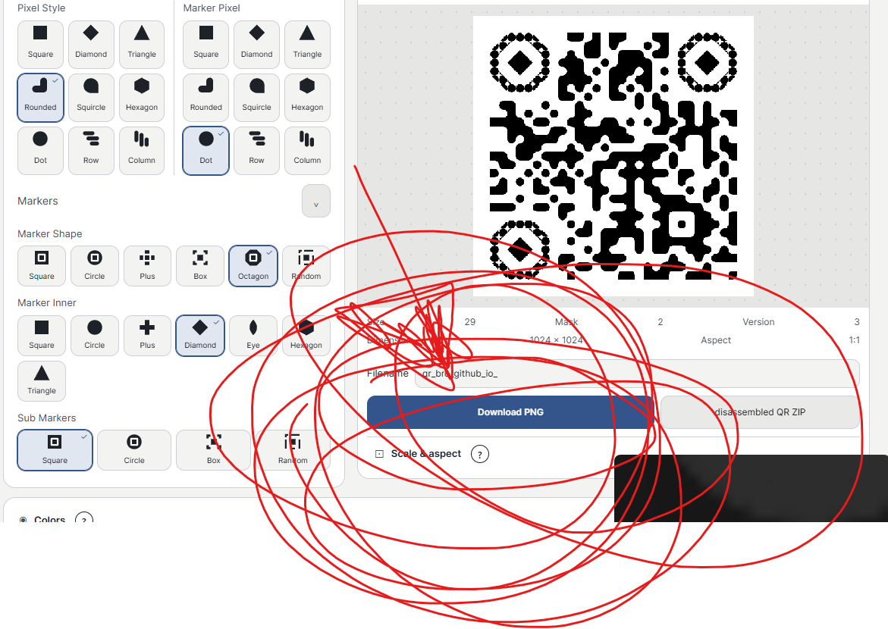
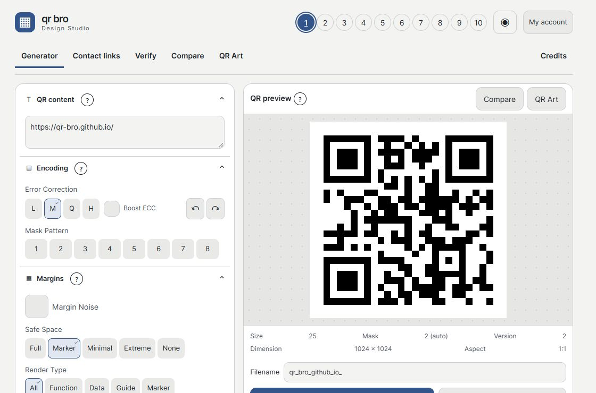

Empfohlener Ablauf
Empfohlener Ablauf
Benutzerhandbuch
Empfohlener Ablauf
Öffnen Sie Kontaktlinks, um einen Link zu erstellen, oder kopieren Sie den Text, den Ihr QR-Code enthalten soll.

Öffnen Sie den Generator und fügen Sie Ihren Link oder Text in das QR-Inhaltsfeld ein.

Probieren Sie verschiedene Ränder, Farben und Formen aus, bis Ihnen der Code in der Vorschau gefällt.

Klicken Sie auf die große Schaltfläche „PNG herunterladen“ unter der Vorschau, um Ihren QR-Code als Bild zu speichern.

Es gibt noch viele weitere Optionen, von denen ich weder Screenshots gemacht noch hochgeladen habe, aber Sie verstehen, was ich meine.
Niemand bezahlt mich dafür und mein Hund wartet schon seit einer Stunde auf einen Spaziergang.
Eines Tages werde ich mich um den Rest kümmern.
Generator
Öffnen Sie in QR BRO ↗Geben Sie eine URL oder einen Text ein. Die Vorschau wird während der Bearbeitung aktualisiert. Laden Sie ein PNG für ein einzelnes Bild oder eine ZIP-Datei für separate QR-Ebenen herunter.

QR-Inhalt
Fügen Sie den vollständigen Text ein, den ein Scanner lesen soll.
Kodierung
Wählen Sie eine Fehlerkorrektur und ein Maskenmuster. Eine höhere Korrektur lässt mehr Spielraum für die Wiederherstellung beschädigter Daten, kann jedoch die Dichte erhöhen.
Ränder
Legen Sie die Ruhegrenze in Modulen fest. Vier übersichtliche Module helfen Scannern beim Auffinden des Codes. Lärm-, Schutzraum- und Layer-Kontrollen verändern das Umgebungsdesign.
Pixel und Markierungen
Wählen Sie Modulformen und gestalten Sie die Eckmarkierungen separat. Scannen Sie das Ergebnis nach einer Formänderung.
Farben
Wählen Sie die hellen und dunklen Farben oder kehren Sie sie um. Sorgen Sie für ausreichend Kontrast zum Scannen.
Erweiterte Optionen
Erweitern Sie diese Gruppe, um die QR-Dichte, -Dimensionen und -Perspektive zu steuern.
Version und Pixelgröße
Begrenzen Sie den QR-Versionsbereich und passen Sie die Pixelgröße an. Wenn der Inhalt das Versionslimit überschreitet, kürzen Sie ihn oder erhöhen Sie das Maximum.
Verwandeln
Passen Sie die Perspektive auf jeder Achse an. Überprüfen Sie das exportierte Bild nach dem Anwenden der Verzerrung.
Maßstab und Aspekt
Stellen Sie Vorschauzoom, Leinwandgröße, Proportionen und Transparenz ein. Verwenden Sie die JSON-Steuerelemente, um bearbeitbare Einstellungen zu exportieren oder neu zu laden.
Kontaktlinks
Öffnen Sie in QR BRO ↗Wählen Sie zunächst eine Plattform. Geben Sie den gewünschten Empfänger ein, beispielsweise eine internationale Telefonnummer, einen Benutzernamen oder eine E-Mail-Adresse. Fügen Sie eine Nachricht hinzu, sofern dies unterstützt wird. Bei Gruppen-E-Mail-Feldern trennen Sie die Empfänger durch Kommas oder Leerzeichen. Kopieren Sie den generierten Link oder wählen Sie QR erstellen, um ihn im Generator zu öffnen.

Überprüfen
Öffnen Sie in QR BRO ↗Laden Sie ein QR-Bild hoch, legen Sie es ab oder fügen Sie es ein. Lesen Sie den dekodierten Inhalt und den Scanstatus. Überprüfen Sie Kontrast, Ruhezone und Dichte und kopieren Sie dann das Ergebnis oder senden Sie es an den Generator.

Bildunterschiede
Überprüfen Sie, welche Pixel sich zwischen dem Originalbild und dem verarbeiteten Bild geändert haben.
Bildanpassungen
Versuchen Sie, Größe, Graustufen, Kontrast, Helligkeit oder Unschärfe zu ändern. Sperren Sie eine Einstellung, um sie bei zufälligen Versuchen beizubehalten. Vergleichen Sie den neuen Scan mit dem Original.
Vergleichen
Öffnen Sie in QR BRO ↗Laden Sie ein Zielbild und einen Quell-QR hoch oder verwenden Sie die aktuelle Generatorausgabe als Quelle. Die dritte Vorschau bildet Unterschiede zwischen Modulen ab. Sie können jede Eingabe vergrößern und den dekodierten Text kopieren.

Zielverarbeitung
Passen Sie vor dem Vergleich Graustufen, Kontrast, Helligkeit, Unschärfe und Pixelierung an.
Rasterausrichtung
Verwenden Sie das Ziel oder die Quelle als Referenz für das gemeinsame Raster. Wählen Sie die unabhängige Ausrichtung, wenn die Bilder unterschiedliche Ränder haben. Manuelle Steuerungen passen Rastergröße und Rand an.
Gitterdarstellung
Aktivieren Sie das Raster, wählen Sie die Bilder aus, auf denen es angezeigt wird, und passen Sie die Linienfarbe und Deckkraft an.
Overlay-Einstellungen
Aktivieren Sie die Überlagerung und passen Sie die Überblendung und Deckkraft an, um überlappende Details zu vergleichen.
Differenzeinstellungen
Wählen Sie einen Farbmodus für Übereinstimmungen, Differenztyp oder Intensität. Wählen Sie Module zur genaueren Betrachtung aus. Ordnen Sie die Auswahl neu an oder ändern Sie ihre kennzeichnenden Farben.
Vergleichsstatistik
Lesen Sie die Anzahl der Abweichungen und die durchschnittliche Helligkeit ab, um den ausgewählten Vergleich zu beurteilen.
Korrektureinstellungen
Passen Sie die Korrektur an, zeigen Sie eine Vorschau an, markieren Sie Unterschiede und laden Sie das Korrekturbild oder die Korrekturmaske herunter.
Mein Konto und Speicherplätze
Öffnen Sie in QR BRO ↗Mit den Nummerntasten können Sie zwischen zehn lokalen Projekten wechseln. Melden Sie sich an, um geräteübergreifend zu synchronisieren. Erstellen Sie ein Konto mit E-Mail-Adresse und Passwort und bestätigen Sie es über den E-Mail-Link oder Code. Google und GitHub sind ebenfalls verfügbar. In Ihrem Konto können Sie Ihr Profil bearbeiten, Anmeldemethoden und Zwei-Faktor-Authentifizierung verwalten, Synchronisierungskonflikte überprüfen, Einstellungen sichern oder sich abmelden.

Aussehen und Sprache
Öffnen Sie in QR BRO ↗Öffnen Sie die Erscheinungsschaltfläche neben den Speicherplätzen. Wählen Sie eine Sprache, ein Thema und einen hellen oder dunklen Modus. Ihre Sprachauswahl wird auf diesem Gerät gespeichert.

Credits
Öffnen Sie in QR BRO ↗Öffnen Sie Credits für Links zu Erstellern, Bibliotheken und Danksagungen. Die Nutzungsbedingungen sind in der Fußzeile der Website verlinkt.